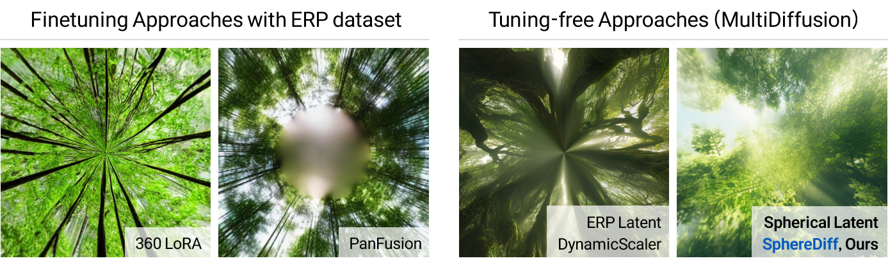
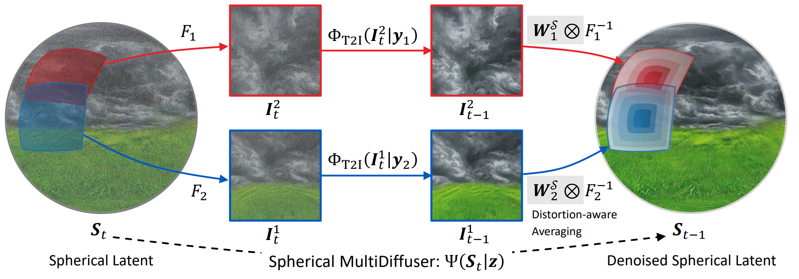
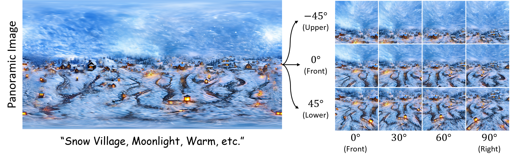

Korea Advanced Institute of Science and Technology (KAIST)
* indicates equal contrubutions.
360-degree panoramic video generated by SphereDiff. Generation Caption is "Firework, City,
Nightscape, Building, River, etc."
The audio was synthesized via MMAudio.
The increasing demand for AR/VR applications has highlighted the need for high-quality 360-degree panoramic content.
However, generating high-quality 360-degree panoramic images and videos remains a challenging task due to the severe
distortions introduced by equirectangular projection (ERP). Existing approaches either fine-tune pretrained
diffusion models on limited ERP datasets or attempt tuning-free methods that still rely on ERP latent
representations, leading to discontinuities near the poles. In this paper, we introduce SphereDiff, a novel approach
for seamless 360-degree panoramic image and video generation using state-of-the-art diffusion models without
additional tuning. We define a spherical latent representation that ensures uniform distribution across all
perspectives, mitigating the distortions inherent in ERP. We extend MultiDiffusion to spherical latent space and
propose a spherical latent sampling method to enable direct use of pretrained diffusion models. Moreover, we
introduce distortion-aware weighted averaging to further improve the generation quality in the projection process.
Our method outperforms existing approaches in generating 360-degree panoramic content while maintaining high
fidelity, making it a robust solution for immersive AR/VR applications.
Motivation

Motivation. Previous finetuning approaches (360 LoRA, PanFusion) often fail to generate continuous
scenes near the pole due to the limited ERP dataset. The tuning-free approach (DynamicScaler) also
fails to generate a seamless frame due to the ERP latent representation. However,
SphereDiff, generates a seamless image.
Overall Pipeline

We initialize uniform spherical latents and extract perspective latents for multiple views at each
denoising step using dynamic latent sampling. These latents are then denoised and fused using the
MultiDiffusion with distortion-aware weighted averaging. This process enables seamless and
distortion-free 360-degree panoramic image and video generation in a tuning-free manner.
Qualitative Results (T2I, SANA, Perspective View)

Visualization results for the entire scene using the ERP representation and 3 perspectives views across
various elevation multiple perspective images or frames.